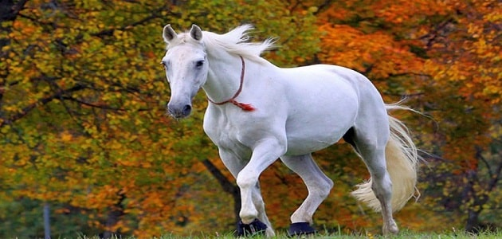

Hourse

The horse or domestic horse (Equus caballus or Equus ferus caballus)[2][3] is a domesticated one-toed hoofed
mammal. It belongs to the taxonomic family Equidae and is one of two extant species in the subgenus Equus.
The horse has evolved over the past 45 to 55 million years from a small multi-toed creature, Eohippus, into
the large, single-toed animal of today. Humans began domesticating horses around 4000 BC, and their
domestication is believed to have been widespread by 3000 BC. Horses in the species caballus are
domesticated, although some domesticated populations live in the wild as feral horses. These feral
populations are not true wild horses (Equus ferus), as this term is used to describe horses that have never
been domesticated. There is an extensive, specialized vocabulary used to describe equine-related concepts,
covering everything from anatomy to life stages, size, colors, markings, breeds, locomotion, and behavior.
Horses are adapted to run, allowing them to quickly escape predators, possessing an excellent sense of
balance and a strong fight-or-flight response. Related to this need to flee from predators in the wild is
an unusual trait: horses are able to sleep both standing up and lying down, with younger horses tending
to sleep significantly more than adults.[4] Female horses, called mares, carry their young for
approximately 11 months, and a young horse, called a foal, can stand and run shortly following birth.
Most domesticated horses begin training under a saddle or in a harness between the ages of two and four.
They reach full adult development by age five, and have an average lifespan of between 25 and 30 years.